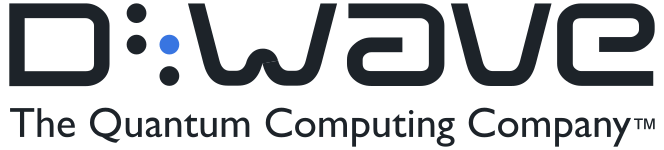

Ranglister Tech-hardware & optik D-Wave Quantum

D-Wave Quantum
Et blik på de samme fund, ikke en ny score. Sådan virker det
Kort fortalt
D-Wave Quantum får 30, primært fordi aktien stadig er meget dyr: ca. 210 gange omsætningen, selv efter et kursfald på 64 % på et år. Underskuddet vokser, omsætningen de seneste 12 måneder er under halvdelen af 2025-niveauet, og over halvdelen af egenkapitalen er værdier fra et opkøb. Staten fik i september ca. 1,9 % af aktierne uden stemmeret mod op til 100 mio. dollar i støtte efter milepæle; udvandingen er lille, men intet var udbetalt pr. 30/9, og aftalen kan opsiges eller erklæres ugyldig. Til gengæld har selskabet en nettokasse på 446 mio. dollar, og ordrebeholdningen er vokset kraftigt. Hold øje med fjerde kvartal, hvor analytikernes skøn kræver et stort systemsalg.
Modellen fandt flere alvorlige problemer. Det betyder ikke, at aktien vil falde.
Største fradrag
- Multipler mod egen historik og peers−29
- Margin−12
- Vækstens kvalitet−6
Styrker
- Nettokasse+3
- Ordrebeholdning+2
Sådan er scoren bygget op
Fra 100 til 30, trin for trin: point trækkes fra for forretningen, prisen og revnerne, lægges til for dokumenterede styrker, og så følger tre datajusteringer.
Hold musen over et trin eller vælg det for at se, hvad der drev det. Trin med fund åbner dem nedenfor.
Nøgletal
Pr. 23 nov. 2026. Analytikernes kursmål er ofte optimistiske; læs opsiden som et fingerpeg, ikke en prognose.
- Pris
- 7.31 USD
- Analytikernes mediankursmål
- 22.00 USD
- Opside til median
- +201.0%
- Analytikere
- 17
- Kursmålsinterval
- 10.88 – 35.00 USD
- 52-ugers ændring
- −64%
- P/E (historisk)
- n/a
- Forward P/E
- n/a
- PEG
- n/a
Fund
Hvert fradrag og hvert plus med sin kilde. Åbn et trin for at læse dem.
Forretning
Bliver virksomheden stærkere, ikke bare større? · 3 fund−23 af −30
- −12MarginDriftsresultatet er −196,3 mio. $ TTM på en omsætning på 13,2 mio. $ (driftsmargin −1.487 % mod −1.373 % ved forrige analyse). GAAP-driftsomkostningerne steg 84 % til 55,9 mio. $ i Q3, og justeret EBITDA-tab var 37,7 mio. $ (+83 %). Bruttomarginen faldt til 52,9 % i Q3 (71 % året før). Underskuddet tæller her og ikke igen under ROIC.
- −6Vækstens kvalitetQ3-omsætningen steg 21 % til 4,5 mio. $, men væksten kom fra rådgivning (+1,5 mio. $) med lav margin, mens systemsalg faldt 1,5 mio. $; QCaaS steg 0,8 mio. $. TTM-omsætningen (13,2 mio. $) er under halvdelen af 2025 (24,6 mio. $), og Q3-bookinger faldt 19 % til 1,9 mio. $. Ni-måneders bookinger på 37,4 mio. $ hviler på få store aftaler.
- −5KapitalallokeringQuantum Circuits-opkøbet (538,5 mio. $, januar 2026) står nu som 342,6 mio. $ goodwill og 208,4 mio. $ immaterielle aktiver – over halvdelen af egenkapitalen på 1,04 mia. $ (P/TBV 5,7). Kasse og værdipapirer faldt fra 884 til 503 mio. $ på ni måneder.
Pris
Dagens multipler mod selskabets egen historik og dets sammenlignelige selskaber. · 1 fund−29 af −35
- −29Multipler mod egen historik og peersEfter et kursfald på ca. 54 % siden forrige analyse er P/S 210 og EV/Sales 177 TTM (fra 473/433), og EV er ca. 62 gange analytikernes 2026-omsætning. Det er stadig langt over 2022–23 (P/S 16–22), selv om det er under boble-niveauet i 2024–25 (256–372). IonQ handles til EV/Sales 24 TTM og forward P/S 12, så D-Wave koster stadig ca. 7 gange så meget pr. omsætningskrone uden overskud i sigte (EPS-skøn 2026 −0,31 $).
Revner
Cash flow, kunder, gæld, insidere, guidance og det, der ligger bag hovedtallene. · 6 fund−17 af −35
- −6Pengestrøm og udvandingFCF er −142 mio. $ TTM (−119 ved forrige analyse) og ca. −50 mio. $ i kvartalet, så kassen på 503 mio. $ rækker ca. 2,5 år uden ny kapital. Aktietallet er +25,8 % på et år (+0,9 % i Q3), men der er ikke solgt aktier via ATM i 2026; udvandingen er bremset, ikke stoppet.
- −3Statens aktiepost (CHIPS-aftale)Handelsministeriet fik 8/9 7.095.721 stemmeløse aktier (ca. 1,9 %) til 14,093 $ mod op til 100 mio. $ i milepælsstøtte. Udvandingen er lille og sket til næsten dobbelt nuværende kurs, men pr. 30/9 var intet udbetalt, pengene er bundet til projektet, ministeriet kan opsige med 60 dages varsel, og selskabet skriver selv, at Kongressen eller domstolene kan erklære aftalen ugyldig. Ranking member Zoe Lofgren har kaldt kapitalandelene ulovlige, og demokraterne overtager Kongressen i januar 2027. Desuden har D-Wave bedt SEC's stab om at godkende regnskabsbehandlingen; konsultationen er ikke afsluttet, og Q3 kan blive ændret.
- −1Governance: finansdirektørFinansdirektør John Markovich gik på pension 2/9-2026, og SVP Greg Golkov er stadig kun fungerende CFO midt i en kompleks regnskabsbehandling af statsaftalen og SEC-konsultationen.
- −2KundekoncentrationÉn kunde stod for 41 % af omsætningen i Q2 2026 og 35 % i første halvår; i Q3 kom omsætningen fra over 100 kunder, men 10-Q oplyser ikke koncentrationen for kvartalet.
- −2Teknologi og strategiskifteD-Wave satser både på annealing og (efter Quantum Circuits) gate-model, hvor IonQ, IBM og Google er langt fremme; gate-model-produktet er stadig en simulator i beta, og målet om 100 logiske qubits ligger først i 2032.
- −3Makro og sentimentAktien er −64 % på 52 uger og 60 % under 200-dages snittet (18,12 $), beta 2,3, og 21,7 % af aktierne er solgt short (fra 18 %).
Plus
Kun dokumenterede styrker. · 2 fund+5 af +15
- +3NettokasseNettokasse 446 mio. $ (503 mio. $ i likvider og værdipapirer mod 57 mio. $ gæld), ca. 16 % af markedsværdien, og ingen warrant-forpligtelser.
- +2OrdrebeholdningResterende leveringsforpligtelser (RPO) på 38,3 mio. $ pr. 30/9, op 1.221 % på et år; 59 % ventes indtægtsført inden for 12 måneder. Bookinger for ni måneder 37,4 mio. $ (+611 %).
Forbehold
Det, scoren ikke fanger, eller hvor dataene er svage.
Også i Tech-hardware & optik
De højeste scorer i samme branche.